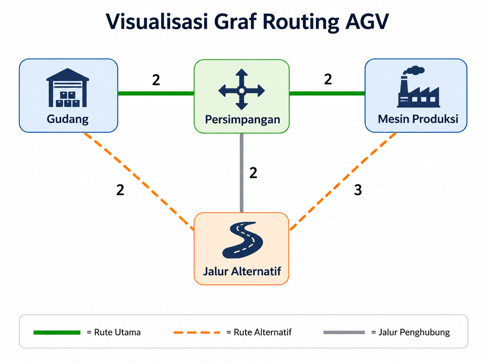

Simulasi pemilihan rute Automated Guided Vehicle dari Gudang menuju Mesin Produksi menggunakan konsep graf, shortest path, dynamic graph, dan visualisasi interaktif berbasis web.
Simulasi ini digunakan untuk menunjukkan bagaimana AGV memilih jalur tercepat dari Gudang menuju Mesin Produksi berdasarkan bobot lintasan.
Rute normal memiliki estimasi 4 menit, sedangkan rute alternatif memiliki estimasi 5 menit ketika jalur utama tidak dapat dilewati.
Studi kasus ini menggambarkan pabrik modern yang memanfaatkan AGV untuk mendistribusikan material dari Gudang menuju Mesin Produksi. Area yang digunakan dalam simulasi meliputi Gudang, Persimpangan, Jalur Alternatif, dan Mesin Produksi.
Jika jalur utama terbuka, AGV bergerak melalui Gudang ke Persimpangan lalu ke Mesin Produksi dengan estimasi waktu 4 menit.
Jika jalur Persimpangan ke Mesin Produksi tidak dapat dilewati, sistem menghitung ulang dan memilih Jalur Alternatif.
Node merepresentasikan lokasi pabrik: Gudang, Persimpangan, Jalur Alternatif, dan Mesin Produksi.
Edge adalah lintasan AGV yang menghubungkan antar-node dan memiliki bobot estimasi waktu tempuh.
Shortest path memilih rute dengan total bobot paling kecil, yaitu rute utama 4 menit.
Dynamic graph terjadi ketika kondisi edge berubah, misalnya jalur utama tertutup sehingga sistem menghitung ulang rute.
| Jenis | Representasi | Keterangan | Bobot |
|---|---|---|---|
| Node | Gudang | Titik awal AGV mengambil material | - |
| Node | Persimpangan | Titik percabangan jalur utama | - |
| Node | Jalur Alternatif | Jalur cadangan saat rute utama terganggu | - |
| Node | Mesin Produksi | Tujuan pengiriman material | - |
| Edge | Gudang - Persimpangan | Lintasan utama awal | 2 menit |
| Edge | Persimpangan - Mesin Produksi | Lintasan utama menuju tujuan | 2 menit |
| Edge | Gudang - Jalur Alternatif | Lintasan alternatif awal | 2 menit |
| Edge | Jalur Alternatif - Mesin Produksi | Lintasan alternatif menuju tujuan | 3 menit |
| Edge | Persimpangan - Jalur Alternatif | Jalur penghubung tambahan | 2 menit |
Graf berikut menunjukkan hubungan antar-node dan perubahan rute saat jalur utama mengalami hambatan.

Gudang -> Persimpangan -> Mesin Produksi = 4 menit.
Gudang -> Jalur Alternatif -> Mesin Produksi = 5 menit.
Persimpangan -> Jalur Alternatif digunakan sebagai jalur tambahan.
Cisco Packet Tracer digunakan untuk menganalogikan router sebagai node, kabel sebagai edge, dan OSPF sebagai mekanisme routing otomatis. Aplikasi Streamlit digunakan untuk menampilkan rute, estimasi waktu, dan keputusan sistem secara interaktif.
Membuktikan jalur komunikasi dari Gudang ke Mesin Produksi melalui ping dan traceroute, termasuk saat jalur utama dimatikan.
Menampilkan pilihan titik awal, tujuan, kondisi jalur tertutup, hasil routing, estimasi waktu, dan visualisasi graf.
| No | Kondisi | Rute Dipilih | Estimasi | Keputusan |
|---|---|---|---|---|
| 1 | Jalur normal terbuka | Gudang -> Persimpangan -> Mesin Produksi | 4 menit | Menggunakan rute utama |
| 2 | Jalur utama tertutup | Gudang -> Jalur Alternatif -> Mesin Produksi | 5 menit | Perhitungan ulang rute |
| 3 | Potensi collision di Persimpangan | Gudang -> Jalur Alternatif -> Mesin Produksi | 5 menit | Menghindari collision path |
NetworkX digunakan untuk membentuk graf dan menghitung rute terpendek berdasarkan bobot.
import streamlit as st import networkx as nx G = nx.Graph() edges = [ ("Gudang", "Persimpangan", 2), ("Persimpangan", "Mesin Produksi", 2), ("Gudang", "Jalur Alternatif", 2), ("Jalur Alternatif", "Mesin Produksi", 3), ("Persimpangan", "Jalur Alternatif", 2), ] G.add_weighted_edges_from(edges) # Jika jalur utama ditutup active_G = G.copy() active_G.remove_edge("Persimpangan", "Mesin Produksi") path = nx.shortest_path( active_G, source="Gudang", target="Mesin Produksi", weight="weight" )
Hasil simulasi menunjukkan sistem dapat memilih rute utama ketika kondisi normal dan melakukan perhitungan ulang ketika jalur utama tertutup.
Rute utama: Gudang -> Persimpangan -> Mesin Produksi.
Rute alternatif: Gudang -> Jalur Alternatif -> Mesin Produksi.
Koneksi berhasil pada jalur alternatif berdasarkan pengujian ping/traceroute.
Sistem mampu memvisualisasikan node, edge, bobot, rute utama, rute alternatif, dan keputusan sistem secara interaktif.
Sistem masih berupa simulasi konseptual. Bobot masih manual dan belum memakai sensor real-time maupun kontrol AGV fisik.